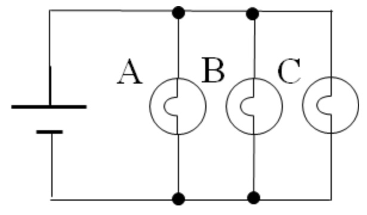

Please choose the answer below that best explains your reasoning.

Bulb B will not be affected by the other two bulbs because they have a parallel connection.
There isn’t a closed path between bulb B and bulbs C or A.
Bulbs A and C make a closed path.
There is a closed path between bulb A and the battery.
Submit Answer